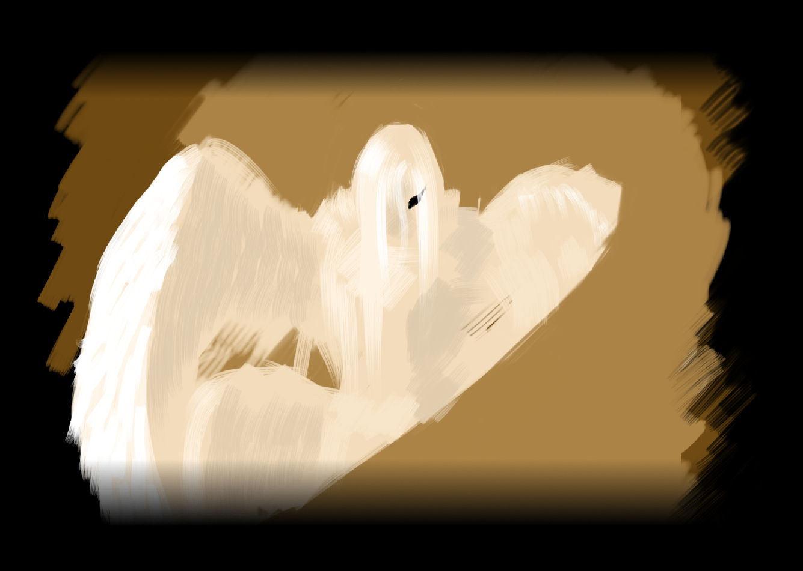

"Lillyemel" - "Lilliemel" - "Лиллиемел"
{kind=link}
Lillyemel, auch unter Lilliemel bekannt, ist einer der wenigen mystischen Gestalten der antiken Zeit, die es bis in die heutige Zeitgeschichte geschafft haben. Lillyemel wurde unter anderem als "Tochter der Zwietracht" in historischen Büchern aufgefunden, jedoch gibt es bis heute noch keine soliden Beweise, das sie es tatsächlich sei. Über Lillyemel ist nicht viel bekannt, dies sind aber einige wertvolle Informationen, die mitgeteilt werden können:
Lillyemel wird als Göttin oder Halbgöttin in den Meisten der antiken Schriften beschrieben, unterschiede liegen in der Herkunft der Schriften, da die Nord-Avienier nicht an den Gott Bodjes, Herrscher über den friedvollen Todes glauben, der in dem süd-avienischen Glauben den Vater von Lillyemel darstellt. Lillyemel sei, so in der süd-avienischen Mythologie, die erste Tochter des Bodjes und gleichzeitig auch die Einzige, die es schaffte, ein nachfolger in die Welt zu setzen, welcher wegen des Götterblutes und der Möglichkeit Bodjes wiederzuerwecken bis zum Ende aller Zeiten von den Göttern gejagt wird. Der Name und nachkommen des Nachfolgers Lillyemels sind bis Heute noch unbekannt.
{kind=link}